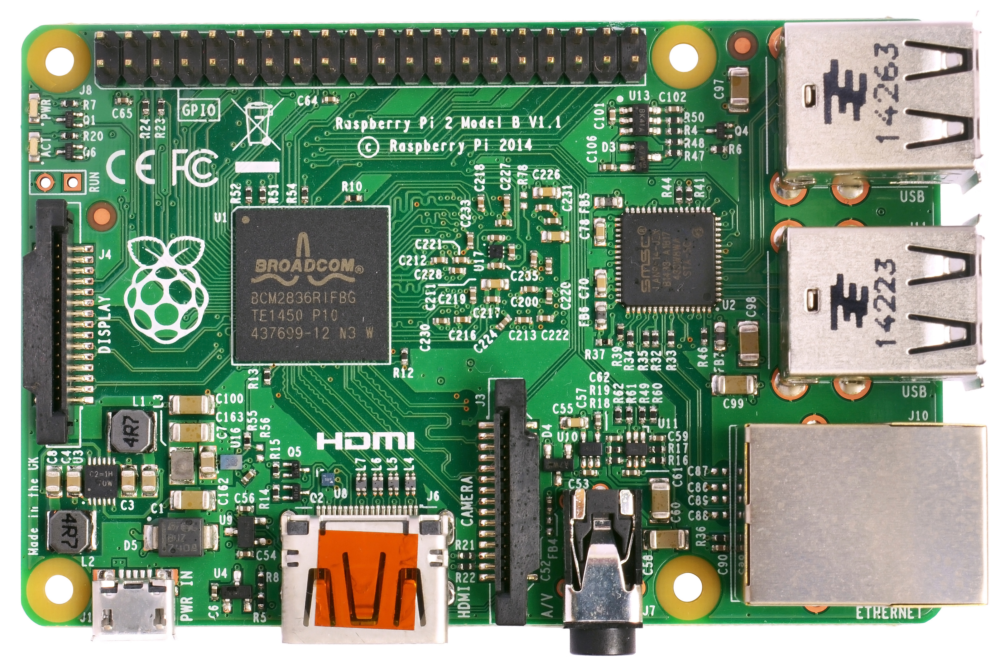

Pi + JS
March 2, 2016
GitHub
David Crook
Hardware
“Those parts of the system that you can hit with a hammer are called hardware; those program instructions that you can only curse at are called software.”
Single Board Computers
| SBC | Price |
|---|---|
| Raspberry Pi Model B+ | $25 |
| Raspberry Pi 2 Model B | $35 |
| Raspberry Pi Zero | $5 |
Many more exist...
Why Raspberry Pi exists
“The idea behind a tiny and affordable computer for kids came in 2006, when [the people behind the Pi] became concerned about the year-on-year decline in the numbers and skills levels of students entering Computer Science at University.”
Paraphrased from Raspberry Pi Foundation - About
Why is it called Raspberry Pi?
"[W]e wanted a fruit name for nostalgic reasons, and the Pi comes from Python" (the programming language) ~ Liz Upton
Raspberry Pi is a trademark of the Raspberry Pi Foundation
Pieces of Pi
The Pi's in front of you are Pi models B+ or 2 B with a Broadcom ARM SoC
- Connected to a 5W (5V @ 1A) external power supply and wired Ethernet
- Running Raspbian OS from µSD card
- The 40-pin expansion header provides power pins and many kinds of I/O ports
- We are going to wire some of these pins up today to additional hardware
Pi Board (B+)

{kind=link}
Pi Board (2 B)
.jpg){kind=link}
Does it work?

Web Interface

Why node.js
- single-threaded, event-driven programming model
- good for low-level I/O programming in many ways
- resource usage is low
- fast, even on a tiny computer
- It's Javascript!
Hands-on Portion
- Wire it up
- Serve it up
- It's alive!
- Profit
Wire it up

Hands-on Demo Pt. 1
open -a Marked\ 2 demo_notes/demo1.md
DEMO Pt. 2
open -a Marked\ 2 demo_notes/demo2.md
Enhancements
- Authentication and Authorization
- Only trusted users can do allowed things
- Rate limiting and other checking
- Hardware has real-time and real-world constraints
- Color calibration
- Tweak circuit parameters to resemble color scales
- Make it a thing or appliance!
- Connect to an external service or control other things
- Hacking it
- What else can you think of?
Thank you for (not) smoking
David Crook <idcrook@idcrook.com>
Twitter: @idcrook
Github: @dpcrook
Blog: github.crookster.org